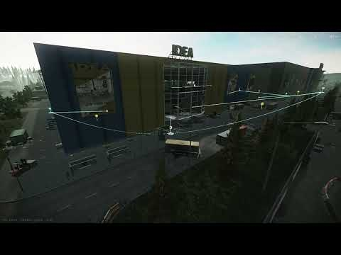

CineKit - Cinematic Freecam and Fly Path Recorder
- Downloads
- 87
- Favourites
- 3
- Mod lists
- 2
CineKit
CineKit is an in-raid cinematic camera toolkit for SPT players who want to record videos, create smooth camera movements, plan shots, or explore THE CITY from new perspectives.
Ordinary freecam systems can struggle when the camera moves far away from the player or high above the map because EFT continues calculating visibility around the character. CineKit integrates with EFT’s culling, environment, LOD, and vegetation systems so distant and high-altitude shots continue rendering without requiring the player to follow the camera.
[WARNING] Freecam keeps distant terrain and objects rendered beyond EFT’s normal culling range, which may reduce performance or cause stuttering. Lower the LOD and render-distance settings if needed. For static world shots, disabling AI can significantly improve performance. During recording, frame simulation can maintain the target output frame rate even when the game runs more slowly.

Usage
Press Home while in a raid to open or close the CineKit GUI menu.
Press F12 to open the BepInEx configuration menu, where CineKit settings and hotkeys can also be changed.
Features
Freecam
- Detached cinematic camera with smooth movement and rotation
- Adjustable speed, boost speed, and mouse sensitivity
- Optional player control while using the freecam
- Improved distant and high-altitude map rendering
- Integration with EFT’s visibility and culling systems
Camera Paths
- Create, edit, save, and reuse camera paths
- Smooth Bézier curves with editable points and tangents
- Per-point speed, acceleration, deceleration, and delays
- Connected, looping, and camera-relative path placement
- In-world path visualization and editing
Recording
- Record video and game audio through FFmpeg
- Supports capture frame rates above the game’s rendered frame rate
- Adjustable resolution, frame rate, and quality
Visuals and Controls
- Adjustable antialiasing, grass distance, and object LOD
- Custom crosshair and interface options
- Configurable hotkeys
Camera Paths
Create camera points from the freecam’s current position and combine them into smooth, cinematic routes.
Path features include:
- Multiple path groups
- Smooth Bézier curves
- Editable incoming and outgoing tangents
- Per-point speed, acceleration, deceleration, and delays
- Connected and looping routes
- In-world editing and path visualization
- Reusable saved templates
Recording
CineKit can record camera-path playback with game audio through FFmpeg.
Before recording, place ffmpeg.exe in the CineKit plugin folder or add FFmpeg to your system PATH.
CineKit is designed for cinematic videos, map showcases, planned camera movements, environment exploration, and perspectives that are difficult to achieve with a basic freecam.
Version
1.0.0
Release